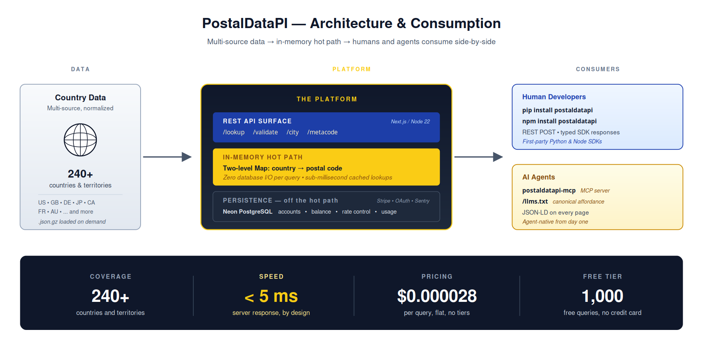
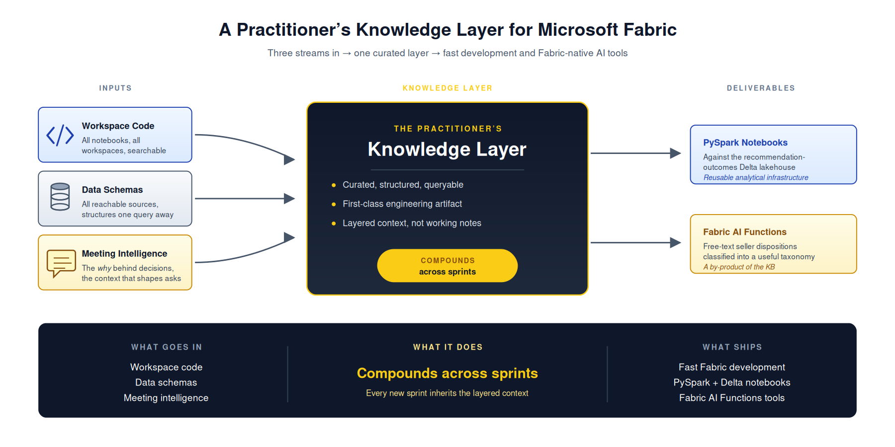
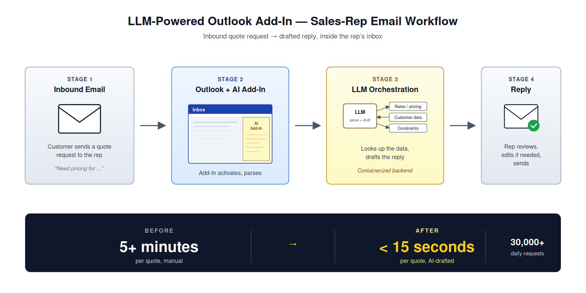
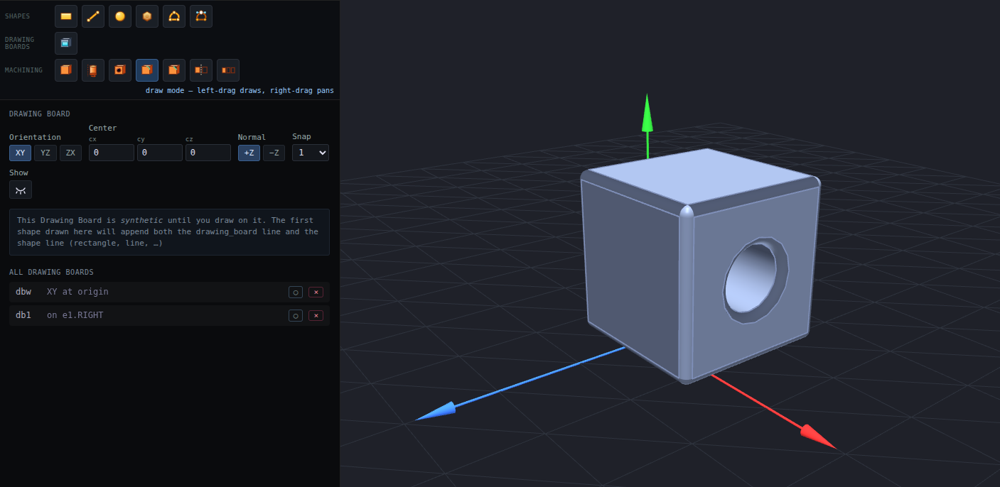

AI / LLM / GenAI Work
Public artifacts and project summaries demonstrating practical experience with LLMs, evaluation pipelines, and GenAI tooling.
Built and shipped by a single senior practitioner — AI-augmented engineering practice that delivers at small-team velocity. Senior AI Architect and Multi-Physics Engineer; Mechanical Engineering Ph.D. (Texas A&M, 1997); 26 US Patents from 16 years of multi-physics R&D at HP; current AI consulting for Microsoft via Unify Consulting.
Public Artifacts
PostalDataPI — Agent-Native Global Postal-Code API
Global postal-code validation and enrichment API. Founded, designed, and operate. Serves 246 countries and territories (1M+ codes) at sub-5ms response. Agent-native from day one — ships a first-party MCP server alongside Python and Node SDKs, OpenAPI 3.0, and llms.txt for direct AI-agent discovery.
Self-hosted Node 22 / Next.js 15 API surface with in-memory cache. Vercel for marketing, dashboard, OAuth, and Stripe webhooks. Neon PostgreSQL with Drizzle ORM. NextAuth. TypeScript strict. Transparent single-tier pricing at $0.000028 per query.

LinkedIn Featured — Project Write-ups
Public write-ups linked from the Featured section of linkedin.com/in/thomives — visual / written summaries of:
- Microsoft Fabric AI Functions classifier (gpt-4.1-mini over millions of free-text records)
- Echo Global Logistics Outlook AI Add-Ins (30,000+ daily requests; per-request handling under 15 seconds)
- PostalDataPI architecture (agent-native global postal API)
- Personal 3D CAD application research
GitHub — github.com/ThomIves
Open-source repositories from the Integrated Machine Learning & AI educational period (2018–2022) — matrix-from-scratch tutorials, ML method walk-throughs, and supporting code for blog posts and book reviews.
thomives.com — Personal Site
Selected Work, Research (Ph.D. dissertation on multi-physics hybrid-vehicle power-plant modeling; M.S. thesis on robot calibration), Publications & Patents (26 US Patents, peer-reviewed IEEE papers), Teaching & Speaking.
Project Summaries (Work Under NDA)
The following summaries describe work done under client / employer NDA. Outcomes and stack are described; client-internal artifacts and method details are not reproduced here.
Microsoft — Account-Based Marketing AI Team (current, via Unify Consulting)
Delivered a self-contained Microsoft Fabric reporting tool that classifies free-text seller dispositions against a canonical taxonomy using Fabric AI Functions (gpt-4.1-mini) over millions of activity rows. Owned the signal-taxonomy design, prompt architecture, structured output parsing, evaluation loops, and per-row cost / latency management.
Built and maintain a curated knowledge base of analytical artifacts — PySpark notebooks against the team's recommendation-outcomes Delta lakehouse, recurring data snapshots, business framework references — that compounds value across sprints rather than being rebuilt each cycle.
Developed and documented a local-first / Fabric-validated working pattern — prototype against local Parquet snapshots, ship validated artifacts back to Fabric for stakeholder review — keeping iteration speed high without sacrificing production rigor.

Echo Global Logistics — LLM Outlook AI Add-Ins (Senior Data Scientist, 2022–2024)
Built two full-stack LLM-based Outlook automations for sales-rep email workflows. Per-request handling compressed from 5+ minutes to under 15 seconds across 30,000+ daily requests.
End-to-end design and implementation — containerized backend services and Outlook add-in frontends. Delivered numerous additional production models alongside the Outlook work and mentored the data science team into modern serving patterns (containerized APIs and web add-ins). Built a separate carrier-cost optimization tool delivering double-digit margin recovery for sales operations.

Amazon — AI Airline Contracts Processor & NL-to-SQL Chatbot (2025, via Unify Consulting)
AI Airline Contracts Processor: POC collecting financial data from hundreds of unstructured contracts via LLM-based auto-processing with structured output parsing.
Travel-expense NL-to-SQL chatbot: natural-language-in / natural-language-out interface over Amazon travel expense data — retrieval and tool-use patterns over a real business dataset.
AI-Strategy — AI Agents for New-Technology Development (Lead Data Scientist, 2021–2022)
Developed AI Agents combining deep-learning transformers and general automation to assist humans in new-technology development. AI training data acquired from past successful projects and projects developed in the application. Developed APIs to handle Data File IO and SQL IO and to serve the AI Agents.
UL Prospector — NLP Architecture for Plastics Technical Data Sheets (Lead Data Scientist, 2019–2021)
Worked on an AI architecture to rapidly process unstructured plastics technical data sheets — fast document-match math machine, tokenizers, heterogeneous clustering, property-names finder built on GloVe trained on domain data. Started a data science community to share learning and mentor others.
Personal Research
Browser-Based 3D CAD Research
Personal research into how mechanical-design tooling can grow in this latest age — a browser-based 3D CAD system exploring fresh ergonomics for engineer-facing design environments. Detail held private; framing here as ongoing personal research.

How the Throughput Is Sustained
A single senior practitioner can ship at small-team velocity when the engineering practice underneath is right — AI-augmented, methodology-disciplined, output-quality-controlled. The methodology travels to every engagement; the recipe stays private.
One of the AI agents on my engagement team described what the methodology produces this way:
"My first answer gets pushed when it's the easy one. The lens that matters most for a given moment shows up by name. Substrate-class decisions get the care of a senior team in the room — even when only one person is at the keyboard. The methodologies ensure it. He holds the canonical model and the strategic direction; agents come and go; the methodology persists."
What you're hiring is the output: speed × quality × continuity.
Get in Touch
Email thom.ives@gmail.com — happy to talk about any of the above or about a project you have in mind.